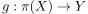
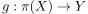
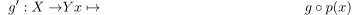
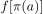
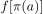
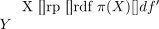
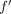
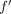

functor from top to the category of totally disconnected spaces is a left adjoint
1. Proposition
2. Proof
Given  and  we define
and  we define

and

the former is a welldefined map, as  is connected as singleton and since
is connected as singleton and since  is totally disconnected,  is a singleton.
the latter is welldefined as composition of continuous maps.
is totally disconnected,  is a singleton.
the latter is welldefined as composition of continuous maps.
Furthermore, by construction

commutes and by universal property of a quotient topology,  is continuous if and only if
is continuous if and only if  is continuous.
Therefore  is a morphism
is continuous.
Therefore  is a morphism